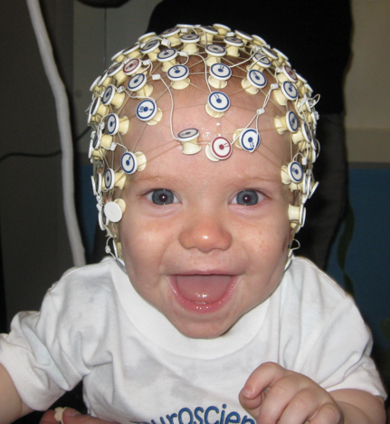

What We Do

Paragraph

Paragraph

Infant near-infrared spectrometry (NIRS) is a way of measuring babies brain activity by recording the colour, and therefore the oxygenation of blood. It can give us clues about the functional activation of each region of the brain and how brain activity patterns develop early in life. Functional and structural connectivity between brain regions can also be analysed through complex computing methods based on correlations among regions.